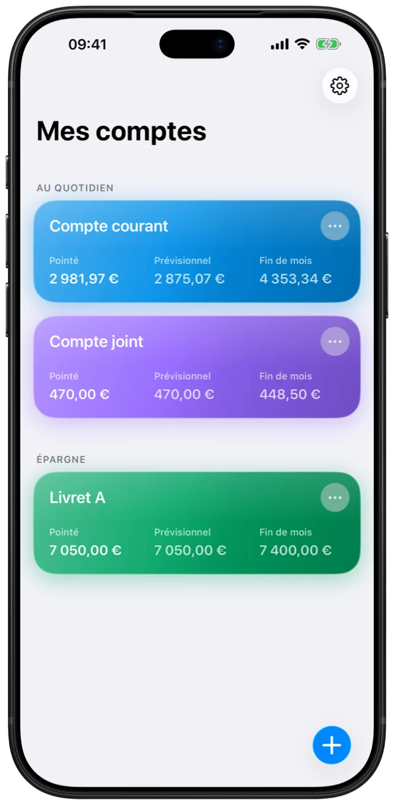
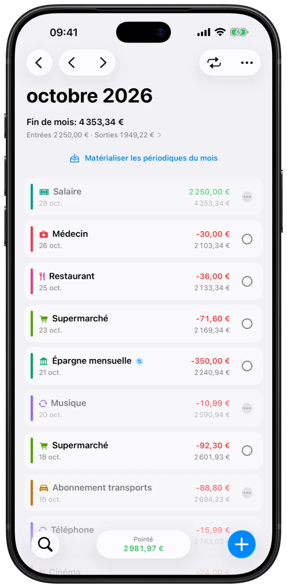

La fin du mois,
sans calcul.
Salaire, loyer, abonnements : vos opérations périodiques se projettent toutes seules.
FIN DE MOIS Exemple
4 353,34 €
Entrées 2 250,00 €Sorties 1 949,22 €
Un carnet de comptes pour iPhone
Ce qui est passé. Ce qui arrive. Ce qu’il restera à la fin du mois. Selene vous aide à y voir clair, un geste à la fois.
Vous gardez la main. Aucune connexion bancaire.


Vous saisissez. Vous décidez.
Votre espace iCloud personnel.
Tout simplement, sur iPhone.
UN PETIT RITUEL. UNE VUE PLUS CLAIRE.
Un carnet de comptes qui suit votre façon de faire. Pas besoin de tout automatiser pour savoir où vous en êtes.
Comprendre le pointageUne dépense, un salaire, un abonnement. Les opérations prévues composent déjà votre prévisionnel.
L’opération apparaît sur votre relevé ? Un geste suffit à la confirmer. Son montant n’est pas compté deux fois.
Votre solde projeté vous aide à décider combien mettre de côté, en gardant une marge.
L’ESSENTIEL, BIEN PENSÉ.
Salaire, loyer, abonnements : vos opérations périodiques se projettent toutes seules.
FIN DE MOIS Exemple
4 353,34 €
Compte courant, compte joint, livrets. Un virement entre vos comptes reste un transfert, pas une dépense.
PERSONNEL, JUSQU’AU BOUT.
Aucun compte Selene à créer. Aucune publicité, aucun traceur. Vos données restent sur vos appareils et, si vous utilisez iCloud, dans votre espace iCloud personnel.
Notre politique de confidentialitéSelene, votre carnet de comptes pour iPhone.
Télécharger sur l’App Store